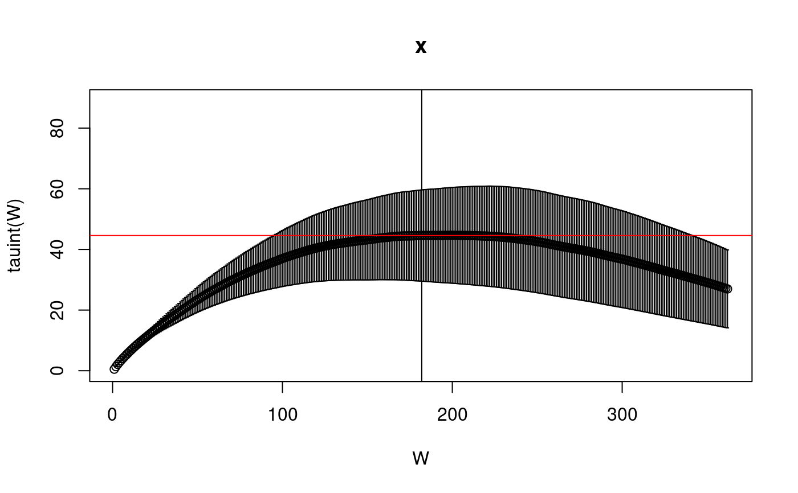

uwerr.RdAnalyse time series data with the so called gamma method
uwerr(f, data, nrep, S=1.5, pl=FALSE, ...) uwerrprimary(data, nrep, S=1.5, pl=FALSE) uwerrderived(f, data, nrep, S=1.5, pl=FALSE, ...)
| f | function computing the derived quantity. If not given it is assumed that a primary quantity is analysed. f must have the data vector of length Nalpha as the first argument. Further arguments to f can be passed to uwerr via the ... argument. f must return a scalar object of numeric type. |
|---|---|
| data | array of data to be analysed. It must be of dimension (Nalpha x N) (i.e. Nalpha rows and N columns), where N is the total number of measurements and Nalpha is the number of primary observables |
| nrep | the vector (N1, N2, ...) of replica length N1, N2 |
| S | initial guess for tau/tauint |
| pl | logical: if TRUE, the autocorrelation function, the integrated autocorrelation time as function of the integration cut-off and (for primary quantities) the time history of the observable are plotted with plot.uwerr |
| ... | arguments passed to function |
returns an object of type uwerr containing
the expectation value of the obsevable
the error estimate
estimate of the error on the error
estimate of the integrated autocorrelation time for that quantity
error of tauint
value of optimal cut-off for the Gamma function integration
``Monte Carlo errors with less errors'', Ulli Wolff, hep-lat/0306017
data(plaq.sample) plaq.res <- uwerrprimary(plaq.sample) summary(plaq.res)#> Error analysis with Gamma method #> based on 6352 measurements #> The Gamma function was summed up until Wopt= 181 #> #> value = 0.5825716 #> dvalue = 2.893496e-05 #> ddvalue = 4.891093e-06 #> tauint = 44.57641 #> dtauint = 13.08938plot(plaq.res)